| Name | Image | Description | Type | Score |
|---|---|---|---|---|
| Blasting Cap | Exploding bombs have a chance to drop another bomb pickup. | trinket | 0 | |
| Black Feather | Increases Isaac's damage for possessing certain evil items. | trinket | 0 | |
| Blind Rage | Increases invincibility time after getting hit. | trinket | 0 | |
| Blister | Increases knockback of tears. | trinket | 0 | |
| Brown Cap | Poop will explode after being destroyed. | trinket | 0 | |
| Bob's Bladder | Leaves a pool of green creep under all bombs Isaac places, which damages enemies that walk over it. | trinket | 0 | |
| Child Leash | Causes familiars to stay closer to each other. | trinket | 0 | |
| Cracked Dice | Whenever Isaac gets hit, there is a chance that the effect of The D6, D8, D12, or D20 gets activated. | trinket | 0 | |
| Endless Nameless | When Isaac uses a pill, card, or rune, there is a chance to spawn another one of the same type. | trinket | 0 | |
| Error | Gives a random trinket effect each room. | trinket | 0 | |
| Faded Polaroid | Occasionally causes Isaac to blend into the ground, which briefly confuses all enemies in the room. | trinket | 0 | |
| Golden Horse Shoe | +15% chance for a Treasure Room with two items to spawn. | trinket | 0 | |
| Karma | Donating to a Donation Machine has a chance to heal Isaac for a full red heart or spawn a Beggar. Increases the chance that donating to a Donation Machine will increase Isaac's luck. | trinket | 0 | |
| Lazy Worm | Tear shot speed is greatly reduced. | trinket | 0 | |
| Lil Larva | Spawns a Blue Fly from every pile of poop Isaac destroys. | trinket | 0 | |
| Louse | Occasionally spawns a Blue Spider. | trinket | 0 | |
| Mom's Locket | Grants half a red heart each time a key is used. Converts half red heart pickups into full red hearts. | trinket | 0 | |
| NO! | Removes all active items from every item pool. | trinket | 0 | |
| Poker Chip | Chests have a 50% chance of paying out with extra pickups and a 50% chance of paying out with nothing or enemies. | trinket | 0 | |
| Rainbow Worm | Isaac's tears gain a random worm effect that changes every 3 seconds. | trinket | 0 | |
| Rib Of Greed | Prevents Greed and Super Greed from appearing in Shops and Secret Rooms. | trinket | 0 | |
| Safety Scissors | Troll Bombs turn into Bomb pickups before they explode. Mega Troll Bombs turn into 1+1 Free Bombs before they explode. | trinket | 0 | |
| Second Hand | Increases the time that status effects stay on enemies. | trinket | 0 | |
| Shiny Rock | Tinted rocks and rocks with Crawl Spaces will flash white every 10 seconds. | trinket | 0 | |
| Store Key | Automatically opens all Shops. | trinket | 0 | |
| Stud Finder | 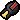 | Increases the chance to find a Crawl Space. | trinket | 0 |
| Super Magnet | Pulls enemies and pickups towards isaac. | trinket | 0 | |
| Tape Worm | Doubles Isaac's range and halves his tear height. | trinket | 0 | |
| Watch Battery | Increased chance of batteries spawning. Has a chance to add an extra charge to Isaac's activated item upon completing a room. | trinket | 0 | |
| ???'s Soul | Spawns a familiar that floats slowly around the room on a pattern similar to The Peeper and fires spectral and homing tears. | trinket | 0 | |
| AAA Battery | Automatically recharges the last energy slot of an activated item, effectively reducing recharge rates by one. | trinket | 0 | |
| Ace of Spades | Increases the chance of tarot cards or playing cards dropping after clearing a room, and the chance of finding cards when opening a chest. | trinket | 0 | |
| Bible Tract | Increases chance for Eternal Hearts to spawn. | trinket | 0 | |
| Black Lipstick | Increases the chance of Black Hearts appearing. | trinket | 0 | |
| Bloody Penny | Gives a 50% chance to drop a half heart when money is collected. | trinket | 0 | |
| Broken Ankh | When held, Isaac has a chance to be revived as ???. Can occur multiple times in the same run. | trinket | 0 | |
| Broken Magnet | Pulls coins towards Isaac, but ignores other pickups. | trinket | 0 | |
| Broken Remote | Triggers the Teleport effect whenever an activated item is used. | trinket | 0 | |
| Burnt Penny | Gives a 50% chance to drop a bomb when money is collected. | trinket | 0 | |
| Butt Penny | Isaac will fart when he picks up a coin. | trinket | 0 | |
| Cain's Eye | When starting a floor, 25% chance to get the The Compass effect for the duration of a floor. | trinket | 0 | |
| Callus | Prevents damage from creep and spikes. | trinket | 0 | |
| Cancer (Trinket) | -2 Tear Delay (effectively increases firerate of tears) | trinket | 0 | |
| Cartridge | Chance to trigger The Gamekid effect upon taking damage. | trinket | 0 | |
| Child's Heart | Increases the chance of a Heart dropping after clearing a room, and the chance of finding a Heart when opening a Chest. | trinket | 0 | |
| Counterfeit Penny | Gives a 50% chance of increasing the value of every coin pickup by one. | trinket | 0 | |
| Cursed Skull | If Isaac has less than one full red heart after taking damage, he will be immediately teleported to the last cleared room he was in. | trinket | 0 | |
| Curved Horn | Increases damage by 2. | trinket | 0 | |
| Daemon's Tail | Grants a huge chance of any non-specific Heart drop turning into a Black Heart. | trinket | 0 | |
| Eve's Bird Foot | 5% chance to spawn a Dead Bird familiar for the current room each time an enemy dies. | trinket | 0 | |
| Fish Head | Spawns a Blue Fly every time Isaac takes damage. | trinket | 0 | |
| Flat Penny | Gives a 50% chance of spawning a key upon collecting a penny. | trinket | 0 | |
| Flat Worm | Isaac's tears take on an oblong appearance. They also push enemies back. | trinket | 0 | |
| Goat Hoof | Increases speed by 0.15. | trinket | 0 | |
| Hook Worm | Tears move shifting left to right forming a path of right angles. +10 to Range (effective range remains about the same). | trinket | 0 | |
| Isaac's Fork | A chance to heal Isaac for 1/2 a red heart upon clearing a room. | trinket | 0 | |
| Isaac's Head | Gives the player Isaac's severed head as a tear-firing familiar. Fires piercing tears. | trinket | 0 | |
| Judas' Tongue | Items in the Devil Room only cost 1 heart. Soul heart trades still cost 3 Soul hearts. | trinket | 0 | |
| The Left Hand | Replaces Brown Chests and Golden Chests with Red Chests. | trinket | 0 | |
| Liberty Cap | Grants a chance of triggering Mini Mush, Odd Mushroom (Large), Odd Mushroom (Thin) or The Compass effects for the current room upon entering it. | trinket | 0 | |
| Lucky Toe | Increases Luck by 1. | trinket | 0 | |
| Lucky Rock | Each obstacle destroyed drops one coin. | trinket | 0 | |
| Maggy's Faith | Gives an eternal heart at the start of every floor. | trinket | 0 | |
| Match Stick | Increases the chance of Bombs dropping after clearing a room, and the chance of finding Bombs when opening a Chest. | trinket | 0 | |
| A Missing Page | 5% chance to induce The Necronomicon's effect upon taking damage. | trinket | 0 | |
| Missing Poster | If Isaac dies in a Sacrifice Room, a puzzle piece will appear on his last will ( and unlocks The Lost). Revives Isaac as The Lost if unlocked. The Missing Poster then disappears. | trinket | 0 | |
| Mom's Pearl | Grants a secondary 10% chance of any non-specific Heart drop turning into a Soul Heart. | trinket | 0 | |
| Mom's Toenail | Mom's foot randomly stomps down somewhere in the room. 1 minute intervals. | trinket | 0 | |
| Monkey Paw | If the character has half a red heart or no red hearts after taking damage, it grants a Black Heart. The effect can trigger up to three times, after which the trinket will disappear. | trinket | 0 | |
| Mysterious Candy | Isaac farts or poops at random intervals. Getting hit can also trigger the effect. | trinket | 0 | |
| Mysterious Paper | Has a chance to replicate the effects of A Missing Page, The Polaroid, The Negative, or Missing Poster. | trinket | 0 | |
| Petrified Poop | Greatly increases the chances of a pickup dropping when destroying poop. | trinket | 0 | |
| Paper Clip | Golden Chests can be opened without using a key. | trinket | 0 | |
| Pinky Eye | Adds a 10% chance to shoot a poison tear, dealing damage over time when inflicted. | trinket | 0 | |
| Purple Heart | Increases chance for challenge rooms to be boss challenge rooms / Causes more enemy champions to spawn. | trinket | 0 | |
| Push Pin | Adds a 10% chance to shoot a piercing and spectral tear. | trinket | 0 | |
| Pulse Worm | Shots pulse in size. | trinket | 0 | |
| Red Patch | Grants a chance of increasing damage by 1.8 for the current room upon taking damage. | trinket | 0 | |
| Ring Worm | Gives Isaac spinning shots. | trinket | 0 | |
| Rosary Bead | "Faith up". Increases the chance of Angel Rooms and Eternal Hearts appearing. | trinket | 0 | |
| Rusted Key | Improves the chances of finding keys and golden chests. | trinket | 0 | |
| Safety Cap | Improves the chance of Pills dropping after clearing a room, and chance of finding a Pill when opening a Chest. | trinket | 0 | |
| Samson's Lock | 1/15 chance to increase damage by 0.5 for the current room each time an enemy dies. | trinket | 0 | |
| Store Credit | The next store purchase is free. The trinket disappears on purchase. | trinket | 0 | |
| Swallowed Penny | Upon taking damage, Isaac drops a penny. | trinket | 0 | |
| The Tick | Drain 15% health of each enemy with more than 60 HP (ie. most bosses). Also restores one red heart of Isaac whenever he enters an uncleared boss room. The Tick cannot be swapped out for another trinket. | trinket | 0 | |
| Umbilical Cord | When Isaac's health is brought to half a red heart and no soul hearts, a Little Steven familiar spawns for the current room. | trinket | 0 | |
| Wiggle Worm | Gives Isaac's shots a wave-like trajectory. | trinket | 0 | |
| Whip Worm | Increases shot speed by 0.5, increasing effective range. | trinket | 0 | |
| Beth's Faith | Spawns four Book Of Virtues orbitals around Isaac at the beginning of each floor. | trinket | 0 | |
| Blessed Penny | Chance to spawn half a soul heart when picking up a coin. | trinket | 0 | |
| Brain Worm | Missed tears will redirect themselves and travel sideways towards enemies. | trinket | 0 | |
| Broken Padlock | Explosions can open locked doors and chests. | trinket | 0 | |
| Broken Syringe | Grants random syringe item effects per room | trinket | 0 | |
| Chewed Pen | Tears have a chance to slow enemies. | trinket | 0 | |
| Devil's Crown | Treasure Rooms are replaced with unique Red Treasure Rooms, offering a Deal with the Devil in place of an item. | trinket | 0 | |
| Electric Penny | Has a chance to generate an active item charge on a coin pickup. | trinket | 0 | |
| Exploded Firecracker | Placed bombs explode almost instantly. | trinket | 0 | |
| Giant Bean | Farts produced by Isaac or familiars will be twice as large. | trinket | 0 | |
| Jawbreaker | Tears have a chance to become a tooth, dealing extra damage. | trinket | 0 | |
| Lighter | Chance for enemies to burn when entering a room. Also makes enemies who expel gas clouds explode. | trinket | 0 | |
| 'M | Active items will be rerolled upon using. | trinket | 0 | |
| Myosotis | Pickups left on current floor will appear in the starting room of the next floor. | trinket | 0 | |
| Old Capacitor | Activated items don't charge, but batteries drop more frequently. The battery drop chance is dependent on the held item's rate of recharge. | trinket | 0 | |
| Perfection | +10 Luck while held, trinket is destroyed when damage is taken. Drops from a floor boss every four floors without taking damage. | trinket | 0 | |
| Song of the Siren | Improves rate of fire of familiars. | trinket | 0 | |
| Teardrop Charm | Tear-based effects have an extra chance of occurring. | trinket | 0 | |
| Bag Lunch | Taking damage has a small chance to destroy the trinket and spawn Lunch. | trinket | 0 | |
| Bat Wing | Unknown | trinket | 0 | |
| Black Tooth | Adds a chance to fire a black tooth that poisons enemies. | trinket | 0 | |
| Bloody Crown | Treasure Rooms appear in Chapter 4. | trinket | 0 | |
| Crow Heart | Red heart damage will be taken before soul and black heart damage. | trinket | 0 | |
| Cracked Crown | Unknown | trinket | 0 | |
| Dim Bulb | Provides a boost to all stats when Isaac's active item is completely uncharged. | trinket | 0 | |
| Duct Tape | Stops Isaac's familiars from moving. | trinket | 0 | |
| Equality! | Adds a chance to turn pickups into their doubled version. | trinket | 0 | |
| Fish Tail | Unknown | trinket | 0 | |
| Fragmented Card | Makes two Secret Rooms spawn on each floor. | trinket | 0 | |
| Locust Of Conquest | Upon entering a room with enemies, spawns two white flies which damage enemies. | trinket | 0 | |
| Locust Of Death | Upon entering a room with enemies, spawns a black attack fly that can instantly kill one enemy. | trinket | 0 | |
| Locust Of Famine | Upon entering a room with enemies, spawns a yellow fly that damages and slows enemies. | trinket | 0 | |
| Locust Of Pestilence | Upon entering a room with enemies, spawns a green fly which damages and poisons enemies. | trinket | 0 | |
| Locust Of Wrath | Upon entering a room with enemies, spawns an orange fly which detonates upon impact with enemies. | trinket | 0 | |
| Lost Cork | Increases the radius of any creep produced by Isaac. | trinket | 0 | |
| Meconium | Poop has a chance to turn into black poop. | trinket | 0 | |
| Nose Goblin | Chance to fire a booger that sticks to enemies and deals damage over time. | trinket | 0 | |
| Ouroboros Worm | Tears travel in a large spiral pattern. | trinket | 0 | |
| Pay To Win | Restock Boxes always spawn in Item Rooms. | trinket | 0 | |
| Silver Dollar | Shops appear in Chapter 4. | trinket | 0 | |
| Stem Cell | Unknown | trinket | 0 | |
| Super Ball | Makes tears have a chance to bounce off enemies and obstacles. | trinket | 0 | |
| Tonsil | When hit, a there is a small chance a removed tonsil familiar starts following Isaac, blocking enemy shots. | trinket | 0 | |
| Used Diaper | Unknown | trinket | 0 | |
| Vibrant Bulb | Provides a boost to all stats when Isaac's active item is fully charged. | trinket | 0 | |
| Walnut | Taking damage has a small chance to destroy the trinket and spawn various pickups. | trinket | 0 | |
| Wish Bone | Taking damage has a small chance to destroy the trinket and spawn a random item. | trinket | 0 | |
| Box Of Friends | Upon use, duplicates all of Isaac's familiars for the current room. | activated | 0 | |
| D12 | Re-rolls all rocks in the current room into other random objects, such as bomb rocks, metal blocks, TNT, or poop. | activated | 0 | |
| D7 | Restarts the current room and brings back all enemies, allowing more rewards to be acquired by completing the room. | activated | 0 | |
| D8 | Re-rolls all of Isaac's stats. | activated | 0 | |
| Diplopia | Single-use. Duplicates all pickups and item pedestals in the room. | activated | 0 | |
| Friendly Ball | Throwing the ball at an enemy instantly kills it and captures it. The captured enemy can later be released and will be charmed for the duration of the room. | activated | 0 | |
| Glass Cannon | When used, reduces Isaac's health to half a heart (including soul and black hearts) and fires one large piercing spectral tear that does a lot of damage. The damage done by Glass Cannon scales with Isaac's damage (at base damage it does 45 damage). | activated | 0 | |
| Glowing Hour Glass | When used, this item will rewind time, put Isaac back in the previous room, and undo anything that happened in the current room. Any health, pickups, or items gained or lost will be reset back to the previous state. | activated | 0 | |
| Jar Of Flies | Every time Isaac kills an enemy, a fly will be added to the jar, up to a maximum of 20. Using the Jar of Flies will release all the flies that are currently in the jar as Blue Flies that will damage enemies. | activated | 0 | |
| Kidney Bean | Upon use, Isaac farts, charming all nearby enemies. | activated | 0 | |
| Mega Bean | When used, the Mega Bean will freeze all enemies in the current room for a couple of seconds, deal 5 damage and poison any enemies near Isaac, and send a wave of spikes that deals 10 damage across the room in the direction Isaac is facing. | activated | 0 | |
| Mega Blast | Upon use, Isaac fires a laser similar to the one used by Mega Satan. This laser deals massive damage, lasts for approximately 15 seconds, and persists between rooms. Isaac is pushed backwards by the force of the laser while it is active. | activated | 0 | |
| Mine Crafter | When used, places an explosive TNT barrel that can be pushed and used to destroy rocks or damage enemies. If used a second time in the same room while the previous TNT barrel is still intact, it will remotely explode the TNT. | activated | 0 | |
| Mom's Box | When used, Mom's Box will drop a random trinket on the ground. While held, doubles the effects of trinkets. | activated | 0 | |
| Placebo | When used, copies the effect of the pill Isaac is currently holding without consuming it. Does not copy the effects of cards or runes. | activated | 0 | |
| Tear Detonator | When used, will detonate any tears currently on the screen and cause each one to split into 6 more tears which will fire in a circle, similar to Tammy's Head. | activated | 0 | |
| Teleport 2.0 | When used, teleports Isaac to a random room that has not been explored yet. If all rooms are explored, including secret rooms, it will teleport Isaac to the Devil or Angel room. If all rooms are explored, including the Devil or Angel room, it will teleport Isaac to the I AM ERROR room. If used in a room with enemies, it will teleport Isaac out and back into the exact same room. | activated | 0 | |
| Ventricle Razor | Can be used to place an orange trapdoor and a blue trapdoor. Upon entering a trapdoor, Isaac is teleported to the other trapdoor. | activated | 0 | |
| Wooden Nickel | When used, has a 50% chance to drop one random type of coin (penny, nickel or dime) | activated | 0 | |
| Anarchist Cookbook | Spawns six troll bombs around the room. | activated | 0 | |
| The Bean | Isaac releases bad gas, poisoning any enemy in close vicinity. | activated | 0 | |
| Best Friend | Deploys a decoy Isaac that eventually explodes with an increased blast radius. | activated | 0 | |
| The Bible | Upon activation, Isaac gains Flight, allowing him to pass over all obstacles in the current room. Instantly kills Mom, Mom's Heart, and It Lives when activated, but will kill Isaac when activated while fighting Satan, Isaac, or ??? unless he has The Wafer. | activated | 0 | |
| Blank Card | Has the same effect as the card or rune currently held by Isaac. | activated | 0 | |
| Blood Rights | Damages all enemies in the room, but deals a half-heart of damage to Isaac with each use. | activated | 0 | |
| Bob's Rotten Head | Upon use, Isaac holds a poison bomb which can be thrown towards any of the four cardinal points and explodes on impact. | activated | 0 | |
| The Book Of Belial | Guarantees a Devil Room or Angel Room will be open after beating a boss while holding it. Upon use increases damage by 2 for the current room and by a further +50% if the character also has the Blood Of The Martyr. | activated | 0 | |
| Book Of Revelations | Adds 1 Soul Heart and makes the next boss a Horseman (except on XL floors and floors with fixed bosses such as Mom). | activated | 0 | |
| Book Of Secrets | Upon use, gives the effect of Treasure Map, The Compass, or Blue Map for the duration of the current floor. | activated | 0 | |
| Book Of Shadows | Upon use, creates a protective shield nullifying all types of damage for 10 seconds. | activated | 0 | |
| The Book Of Sin | Spawns a random Pick Up, Pill, Card, or Trinket. | activated | 0 | |
| The Boomerang | Throws a short-range boomerang which does a bit of damage and has a high chance to stun the enemy for 2 seconds. Can also be used to grab pickups. | activated | 0 | |
| Box Of Spiders | Summons 2-4 Blue Spiders. | activated | 0 | |
| Breath Of Life | Grants a brief moment of invincibility when the charge bar hits zero. If spacebar is held for an additional second after hitting zero, Isaac will take damage. | activated | 0 | |
| Butter Bean | Isaac farts and pushes back nearby enemies. | activated | 0 | |
| The Candle | Throws out a blue flame that can pass over gaps (but not through rocks). The flame damages anything in its path. | activated | 0 | |
| Converter | When used, converts two soul hearts into a heart container. | activated | 0 | |
| Crack The Sky | Summons multiple beams of light in random locations around the room, dealing a large amount of damage to any enemy that touches them. | activated | 0 | |
| Crystal Ball | Reveals the map (except the Super Secret Room) and drops a random Tarot Card or Soul Heart. | activated | 0 | |
| D4 | Rerolls all upgrades on the player. (Does not reroll Azazel's brimstone). | activated | 0 | |
| D6 | Allows Isaac to re-roll collectible items in the current room into other items, depending on the current room's Item Pool. | activated | 0 | |
| D10 | Rerolls the enemies in a room. Only rerolls enemies that are still alive (does not spawn new enemies). | activated | 0 | |
| D20 | Rerolls all pickups in the current room. | activated | 0 | |
| D100 | Upon use, rerolls all passive items on Isaac like the D4, every pedestal item on the room like the D6 and every pickup like the D20. | activated | 0 | |
| Dad's Key | Opens all doors in the current room when activated, including doors which require a Key to open and entrances to secret rooms. Opens the big doors in the first room of both The Chest and The Dark Room. | activated | 0 | |
| Dead Sea Scrolls | Triggers the effect of a random activated item from a list of possible options (not every activated item is included). | activated | 0 | |
| Deck Of Cards | Gives Isaac a random Tarot Card. | activated | 0 | |
| Doctor's Remote | Sets a big red target on the ground (similar to the Epic Fetus item) which can be controlled with tear controls. After 6 seconds or by pressing space again, a huge explosive missile hits it, which damages all enemies caught in its blast radius. | activated | 0 | |
| Flush! | Changes all enemies in the room into poop. Does not work on all enemies (Knights and bosses are immune). | activated | 0 | |
| Forget Me Now | When activated, the level ends and is freshly regenerated with new rooms, monsters, and items. Disappears after use. | activated | 0 | |
| The Gamekid | Upon use, turns the character into a into a Pac-Man-like creature for 5 seconds, granting invulnerability and increased speed, inflicting fear on all enemies, and replenishing half a red heart container for every two enemies killed. | activated | 0 | |
| Guppy's Head | Spawns 2-4 Blue Flies to damage enemies. | activated | 0 | |
| Guppy's Paw | Removes one Heart Container in exchange for gaining 3 Soul Hearts. | activated | 0 | |
| Head Of Krampus | Fires a cross-patterned brimstone shot, just like the Fallen and Krampus shoot. | activated | 0 | |
| How To Jump | Gives Isaac the ability to jump (over gaps, spikes, etc.). | activated | 0 | |
| The Hourglass | Upon activation, enemies and their projectiles are slowed down for a short duration. | activated | 0 | |
| Isaac's Tears | Shoots 8 tears around Isaac, which retain the damage, shot speed, and special effects of his tears. Each tear shot by Isaac increases item charge by one. | activated | 0 | |
| IV Bag | Upon activation, Isaac loses a half-heart (one whole heart in The Womb onwards) for a random amount of coins, similar to the Blood Donation Machine. | activated | 0 | |
| The Jar | When at full health, up to 4 extra hearts can be stored in the jar. | activated | 0 | |
| Kamikaze! | Creates an explosion in the same area as Isaac, dealing half a heart of damage to him and also damaging all enemies caught in the blast radius. | activated | 0 | |
| Lemon Mishap | Creates a small yellow pool of Creep, which damages enemies that cross it. | activated | 0 | |
| Magic Fingers | For 1 Coin, damages all enemies in the room. | activated | 0 | |
| Mom's Bottle Of Pills | Gives Isaac a random Pill, and will cause him to drop any held Q-slot item (If any). The player will only receive six different pill types in one playthrough. | activated | 0 | |
| Mom's Bra | Upon use petrifies all enemies in the current room for approximately 4 seconds. | activated | 0 | |
| Mom's Pad | Upon use inflicts fear to all enemies in the room for 5 seconds. | activated | 0 | |
| Monster Manual | Summons a random familiar for the current room. Can summon familiars not yet unlocked. | activated | 0 | |
| Monstro's Tooth | Monstro jumps onto a random enemy, doing area damage. Can damage/kill the player if summoned in an room without enemies. | activated | 0 | |
| Mr. Boom | Drops a large bomb. | activated | 0 | |
| My Little Unicorn | Upon use, grants invulnerability and increased speed for five seconds, removing the ability to shoot tears and instead dealing contact damage to enemies. | activated | 0 | |
| The Nail | Adds one Soul Heart and allows the breaking of Rocks and damaging enemies by simply walking over them. Increases Damage and decreases Speed. All effects except for the Soul Heart wear off upon leaving the room. | activated | 0 | |
| The Necronomicon | Damages all enemies in the room significantly. | activated | 0 | |
| Notched Axe | Isaac holds the axe above his head for as long as the spacebar button is held (or until he leaves the room). While holding the axe, Isaac can break any rock he touches, but cannot attack or pick up other items. | activated | 0 | |
| Pandora's Box | Upon use, spawns certain Pickups or Items depending on the floor it is used on. Single-use. | activated | 0 | |
| The Pinking Shears | Separates Isaac's head and body for the current room. Isaac's head, which now has flight, will be under the player's control, while his body will seek out enemies to attack by contact damage. | activated | 0 | |
| The Pony | Passively grants flight and increased speed. Upon use, Isaac charges in the direction the pony is facing, becoming invulnerable during the charge and damaging enemies. | activated | 0 | |
| The Poop | Spawns a pile of poop where the character is standing and knocks nearby monsters back. May yield pickups like regular poop. | activated | 0 | |
| Portable Slot | Upon activation, 1 coin will be consumed, and a random Pick Up may drop, similar to the Slot Machine. | activated | 0 | |
| Prayer Card | Grants an Eternal Heart per use. | activated | 0 | |
| Razor Blade | Upon use deals one heart damage and grants +1.2 damage for the current room. | activated | 0 | |
| Red Candle | Throws a persistent flame that deals high damage and diminishes as it damages enemies or blocks shots. | activated | 0 | |
| Remote Detonator | Bombs you place explode only when you use this item. Gives 5 bombs. | activated | 0 | |
| Satanic Bible | Upon activation, Isaac gains a black heart. | activated | 0 | |
| Scissors | Upon use, turns Isaac's head into a stationary familiar for the current room which fires normal tears that deal 3.5 damage. | activated | 0 | |
| Shoop Da Whoop! | Fires a laser from Isaac's mouth. | activated | 0 | |
| Spider Butt | Damages all enemies in the room and slows them and their projectiles down. | activated | 0 | |
| Tammy's Head | Shoots 10 tears in a circle around Isaac, which retain the damage, shot speed, and special effects (such as Poison) of Isaac's tears. | activated | 0 | |
| Telepathy For Dummies | Upon activation, grants homing tears for the current room. | activated | 0 | |
| Teleport | Teleports you to a random room on the level. | activated | 0 | |
| Undefined | Teleports Isaac to either the Secret Room, Super Secret Room, Treasure Room, or I AM ERROR. | activated | 0 | |
| Unicorn Stump | Upon use, grants invulnerability and increased speed for five seconds, but removes the ability to shoot tears. | activated | 0 | |
| We Need To Go Deeper! | Creates a trapdoor to go to the next floor. If used in The Womb, it will create a trapdoor to Sheol, even if the player hasn't unlocked it. | activated | 0 | |
| White Pony | Passively grants flight and increased speed. Upon use, Isaac charges in the direction the pony is facing, becoming invulnerable during the charge and damaging enemies while also casting the effect of Crack The Sky. | activated | 0 | |
| Yum Heart | Restores 1 whole Red heart. | activated | 0 | |
| Alabaster Box | Gains charges through soul, black, and white hearts. After 6 full hearts are absorbed, it will spawn varying amounts of consumables and items from the Angel room pool. | activated | 0 | |
| Black Mushroom | Reduces tear delay but distorts the screen for a length of time. Can be used multiple times to stack the effect. Tear delay is reset on changing rooms; however, the distortion persists. | activated | 0 | |
| Book Of Despair | Increases tears for the current room. | activated | 0 | |
| Book Of Virtues | Summons a temporary flame familiar that fires spectral tears, deal contact damage to enemies and blocks enemy shots. Flames are consumed after taking a certain amount of damage or touching enemies. A maximum of 16 flames can be active at once: one inner ring of eight and an outer ring of eight. | activated | 0 | |
| Bowl of Tears | Fires a cluster of tears. Each tear shot by Isaac increases item charge by one. | activated | 0 | |
| D12 | Re-rolls all rocks in the current room into other random objects, such as bomb rocks, metal blocks, TNT, or poop. | activated | 0 | |
| Damocles | Spawns a sword above Isaac's head. After a period of time, it will instantly kill him. While he is alive, he receives bonus items from bosses and treasure rooms. | activated | 0 | |
| Eraser | Prevents an enemy from appearing for the rest of the run. | activated | 0 | |
| Eternal D6 | 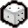 | Rerolls items with chance of disappearing. | activated | 0 |
| Fortune Cookie | Displays a random fortune, and has a chance to drop a soul heart, card, rune or trinket. | activated | 0 | |
| Free Lemonade | Creates a large puddle of lemonade that damages enemies. | activated | 0 | |
| Magic Skin | Generates one item from the current room's item pool and gives Isaac a broken heart, which permanently decreases the maximum health limit. | activated | 0 | |
| Meat Cleaver | Splits all enemies in a room into 2 smaller versions of themselves with lower health. | activated | 0 | |
| Mega Mush | Gigantifies Isaac for a short duration. | activated | 0 | |
| Mom's Bracelet | Allows the player to grab obstacles and throw them, damaging enemies. | activated | 0 | |
| R Key | Upon use, restarts the game to the first floor, keeping all previously collected items. Game timer does not restart. Allows angels rooms to be found even if the previous run included devil deals. | activated | 0 | |
| Red Key | Creates a red colored room on the map near Isaac's current position. The room can be anything from a regular encounter room to a Devil Room. | activated | 0 | |
| The Scooper | Summons a Peep familiar for the current room, which leaves a trail of red creep. | activated | 0 | |
| Sharp Key | Allows Isaac to consume keys and fire them at enemies. Adds 5 keys. | activated | 0 | |
| Stitches | Spawns a familiar that flies diagonally across the room, switching direction upon hitting walls. Activating the item swaps the positions of Isaac and Stitches. | activated | 0 | |
| Sulfur | Grants Brimstone for the current room. | activated | 0 | |
| Voodoo Pin | Hurts Isaac without actually damaging him, activating any items that would trigger upon taking damage. | activated | 0 | |
| Yuck Heart | Upon use, grants a rotten heart. | activated | 0 | |
| Brown Nugget | 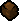 | Spawns a stationary fly familiar that fires tears at nearby enemies. | activated | 0 |
| Clicker | Transforms Isaac into another random character. | activated | 0 | |
| Compost | Spawns a blue spider or fly. Turns pickups in the room into blue spiders or flies. | activated | 0 | |
| Crooked Penny | Spawns a penny and has a 50% chance to double all items and pickups in the room. If the effect fails, the items and pickups disappear. | activated | 0 | |
| D1 | Duplicates a random pickup in the room. | activated | 0 | |
| D Infinity | Grants a random dice item that changes each use. | activated | 0 | |
| Dataminer | Displaces enemy sprites for the current room and increases or decreases a random stat. | activated | 0 | |
| Delirious | Spawns a random charmed boss. | activated | 0 | |
| Dull Razor | Hurts Isaac without depleting health, activating any items that trigger upon taking damage. | activated | 0 | |
| Eden's Soul | Spawns two item pedestals. | activated | 0 | |
| Mama Mega! | Damages all enemies and destroys all obstacles. The effect occurs every time a new room is entered for the rest of the floor. Opens doors to the floor's secret and super secret rooms. | activated | 0 | |
| Metronome | Grants a random item effect for the current room. | activated | 0 | |
| Plan C | Kills all enemies in the room, then kills Isaac three seconds later. | activated | 0 | |
| Potato Peeler | Removes a heart container, increases damage and range, and grants a Cube of Meat. | activated | 0 | |
| Pause | Freezes all enemies until a fire button is pressed. | activated | 0 | |
| Sharp Straw | Damages all enemies in the room. | activated | 0 | |
| Smelter | Consumes Isaac's currently held trinket and applies its effect permanently. | activated | 0 | |
| Void | Consumes all pedestal items in the room. Active items will have their effects added to Void, and passive items will grant stat upgrades. | activated | 0 | |
| Wait What? | Isaac farts, sending out rock waves. | activated | 0 | |
| 8 Inch Nails | +1.5 Damage Up. Replaces Isaac's tears with nails, which have increased knockback. | passive | 0 | |
| Athame | Whenever Isaac takes damage, a black ring briefly appears around Isaac, dealing damage to all nearby enemies. | passive | 0 | |
| Betrayal | Every time Isaac takes damage, a charm effect is applied to every enemy in the room, causing them to attack each other rather than Isaac. | passive | 0 | |
| Binky | Tears up, adds 1 soul heart, and decreases Isaac's size. | passive | 0 | |
| Black Powder | Isaac leaves a trail of black powder on the floor. Walking in a circle will spawn a pentagram symbol on the floor, which deals 10 damage per tick to any enemies inside it. | passive | 0 | |
| Bomber Boy | +5 bombs. Isaac's bombs will now explode in a large cross-shaped pattern (roughly 5 bombs explosions wide). This also affects troll bombs. | passive | 0 | |
| Bumbo | Spawns a beggar familiar which floats around the room and picks up any nearby coins. Every 6 coins Bumbo will evolve to a new form except for level 4 which takes 12 coins. At level 2, Bumbo gains a body and crawls around the room. At level 3, it fires tears in the same direction as Isaac. At level 4, Bumbo no longer fires tears and will instead chase enemies slowly and deal contact damage. It will also sometimes randomly drop bombs. After reaching level 4, Bumbo will also continue to collect coins and drop random pickups, similar to the Bum Friend item. | passive | 0 | |
| Bursting Sack | Spider enemies no longer target or deal contact damage to Isaac. | passive | 0 | |
| Cambion Conception | After taking damage a certain amount of times, a permanent demonic familiar spawns. | passive | 0 | |
| Car Battery | Causes Isaac's activated item to activate twice on each use. | passive | 0 | |
| Censer | Gives Isaac a golden censer familiar which creates a huge aura of light that slows down any enemies inside it. | passive | 0 | |
| Chaos | Chaos causes items to be chosen from random item pools. When picked up, drops between 1-6 random pickups on the floor. | passive | 0 | |
| Charged Baby | A familiar baby that drops a battery every 4 rooms. Has a small chance to freeze all enemies in the room when hit. | passive | 0 | |
| Circle Of Protection | Gives Isaac a large white halo around him, that deals a bit of damage to any enemies in contact with the ring. Every time an enemy bullet enters the ring, there is a chance it will reflect a homing tear back at the enemy. | passive | 0 | |
| Continuum | +2.25 Range Up. +1.5 Tear Height. Isaac's tears travel through walls and appear out of the opposite wall. Isaac's tears also travel over rocks and objects. | passive | 0 | |
| Crack Jacks | Adds one heart container and drops a random Trinket. | passive | 0 | |
| Crown Of Light | Gives Isaac a crown that glows blue when active, and turns gray when inactive. While Isaac has no empty red heart containers, Isaac's tears are replaced with blue diamond tears that deal double damage. Regardless of health, the crown will deactivate for the current room when Isaac takes damage. | passive | 0 | |
| Curse Of The Tower | Causes Isaac to spawn 6 troll bombs on the floor every time he gets hit, similar to the Anarchist Cookbook mechanic. | passive | 0 | |
| Dead Eye | Isaac's damage increases each time an enemy is hit. Damage is reset upon missing a shot. | passive | 0 | |
| Deep Pockets | Allows Isaac to carry two cards or pills (or a combination of both) at the same time. | passive | 0 | |
| Eden's Blessing | Tears up. Grants a random item at the start of the next run. | passive | 0 | |
| Empty Vessel | While Isaac has no red hearts, this item grants flight and a random chance to activate an invincibility shield for a few seconds. If Isaac gains any red hearts, these benefits will disappear. | passive | 0 | |
| Epiphora | Shooting in one direction increases Isaac's rate of fire until the cap is reached. As soon as Isaac changes direction or stops shooting, rate of fire is reset to its normal amount. | passive | 0 | |
| Evil Eye | While firing tears, Isaac has a chance to fire an eye across the screen with a very slow shot speed, which will fire tears of its own in the same direction as Isaac. The eye will be destroyed if it comes into contact with an enemy or obstacle. | passive | 0 | |
| Explosivo | Isaac's tears have a chance to stick to enemies and explode. | passive | 0 | |
| Farting Baby | A familiar that follows Isaac and blocks tears. If a tear hits Farting Baby, there is a high chance for it to fart, which will either knock back, poison, or charm all nearby enemies. | passive | 0 | |
| Fate's Reward | A blue head familiar that will follow Isaac and fire tears copying his tear effects and damage. | passive | 0 | |
| Friend Zone | A white orbiting fly which deals 3 contact damage per tick to enemies. This familiar orbits Isaac at a middle length distance somewhere between Distant Admiration and Forever Alone. | passive | 0 | |
| Fruit Cake | Isaac's tears gain a random effect that changes every shot. | passive | 0 | |
| GB Bug | A glitch familiar that bounces around the room and applies a random status effect to any enemies it comes into contact with and has a chance to re-roll pickups that it passes over. | passive | 0 | |
| Glitter Bombs | Gives Isaac 5 bombs, and makes Isaac's bombs have a chance to drop random pickups or charm enemies when they explode. | passive | 0 | |
| God's Flesh | Tears now have a random chance to apply a shrinking effect, causing enemies to shrink in size and also run away from Isaac. Shrunk enemies can be crushed and killed by walking over them. | passive | 0 | |
| Head Of The Keeper | Isaac's tears become coins and now have a chance to drop pennies on the floor upon successfully hitting an enemy. | passive | 0 | |
| Holy Light! | Isaac has a random chance to fire a Holy tear, which when it hits an enemy, will spawn a Crack The Sky style light beam on the same enemy, dealing damage. | passive | 0 | |
| Host Hat | A host familiar that sits on Isaac's head and has a random chance to block enemy shots and retaliate with 3 tears. Grants immunity to explosions. | passive | 0 | |
| Immaculate Conception | Upon picking up a certain amount of health, spawn a permanent angelic familiar. | passive | 0 | |
| Incubus | A demonic familiar that follows Isaac and shoots tears identical to Isaac's in terms of damage, range, fire rate, and effects. | passive | 0 | |
| Key Bum | Spawns a portable Key Master that follows Isaac and collects keys, giving random chests in return. | passive | 0 | |
| Kidney Stone | Randomly while firing tears, Isaac will stop firing and turn red, where he will charge and release a lot of 'tears' in one go. In the burst of tears is a kidney stone which deals a lot of damage. | passive | 0 | |
| Lil' Chest | Spawns a chest familiar that follows Isaac and drops a random pickup every few rooms. | passive | 0 | |
| Lil Gurdy | Gives Isaac a Gurdy familiar that will charge around the room dealing contact damage to enemies. Lil Gurdy is charged by holding down a fire button and letting go. The longer the button is held, the faster Lil Gurdy will fling itself across the screen. Lil Gurdy can pass over objects and obstacles in the room. | passive | 0 | |
| Lil' Loki | A Loki familiar that follows Isaac and shoots 4 tears in a cross pattern. | passive | 0 | |
| Lost Fly | A familiar fly that moves in a straight line and attaches itself to the first obstacle or wall it comes into contact with in each room. If any enemies walk into its path, it will deal 7 contact damage per tick. If the obstacle it is attached to is destroyed then it will continue rolling in the direction it was previously travelling until it meets another wall or obstacle. | passive | 0 | |
| Lusty Blood | Each time Isaac kills an enemy, Isaac's damage increases for the current room. | passive | 0 | |
| Marked | Isaac will now fire tears automatically directed at a red target on the ground which is controlled by the player. This allows for a full 360 degree tear firing radius. Can be overridden by other tear modifiers such as Mom's Knife or Brimstone. | passive | 0 | |
| Maw Of The Void | +1.0 Damage Up. After continuously firing tears for 3 seconds, a red cross appears on Isaac's head that, upon releasing the fire button, creates a black ring which deals a lot of damage to any enemies inside it. The ring rapidly deals damage equal to Isaac's tear damage to any enemies in contact with it. | passive | 0 | |
| Milk! | A glass of milk follows Isaac and spills on the floor upon taking damage. After the milk spills, Isaac gains a tears up that lasts for the rest of the room. | passive | 0 | |
| Mom's Pearls | +1.25 Range Up. +0.5 Tear Height. +1 Luck Up. | passive | 0 | |
| More Options | Two items spawn in every Treasure Room. Only one can be taken; the other will disappear. | passive | 0 | |
| Mr. Dolly | Tears and Range up. Spawns 3 random types of hearts on the floor when picked up | passive | 0 | |
| Multidimensional Baby | Spawns a familiar that will follow Isaac's movements on a 2.5 second delay. Tears that pass through the baby will be doubled and increase in damage. | passive | 0 | |
| My Shadow | Each time Isaac takes damage, inflicts Fear on all enemies in the room and spawns a black Charger familiar that will attack enemies. The Charger will be killed if it is damaged too much. | passive | 0 | |
| Night Light | A cone of light shines in the direction Isaac is facing that slows enemies and enemy shots. | passive | 0 | |
| No. 2 | Continuously firing tears for several seconds causes Isaac to drop a Butt Bomb. Butt Bombs explode for 50 damage like normal bombs, but also deal 10 damage to all enemies in the room and daze them for a short period of time. | passive | 0 | |
| Papa Fly | A blue fly familiar follows Isaac's movements on a 3 second delay. Papa Fly will fire tears at nearby enemies. | passive | 0 | |
| Pay To Play | This item turns all doors that require a key into doors which need a coin to enter instead. This affects shops, item rooms, libraries and other key doors. | passive | 0 | |
| PJs | Adds 4 Soul Hearts and fully restores Isaac's red health. | passive | 0 | |
| Pupula Duplex | Transforms Isaac's tears into a wide arc shape which gives them a much larger hitbox. Gives Isaac spectral tears which allows them to travel through objects in the environment (i.e. rocks). | passive | 0 | |
| Purity | This item will boost one of Isaac's stats depending on the color of the aura around him. The aura will disappear upon taking damage and will reappear with a random color upon entering a new room. A red aura boosts damage, a blue aura boosts rate of fire, a yellow aura boosts speed, and an orange aura boosts range. | passive | 0 | |
| Obsessed Fan | A purple fly familiar that follows Isaac's movements on a 3 second delay and deals contact damage to enemies. | passive | 0 | |
| Restock | Causes shops to instantly restock their items when they are bought. Granted by default for every character in Greed Mode. | passive | 0 | |
| Rune Bag | A bag that follows Isaac and drops a random mystic rune every 3 rooms. | passive | 0 | |
| Sack Head | Greatly increases the chance to find sacks. | passive | 0 | |
| Scatter Bombs | 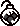 | Adds 5 bombs. Isaac's bombs explode into 2-4 tiny bombs. | passive | 0 |
| Seraphim | An angel familiar which follows Isaac and fires homing tears which deal 10 damage at -25% shot speed and a reduced fire rate. | passive | 0 | |
| Serpent's Kiss | Tears now have a random chance to apply a poison effect, causing 4 or 6 damage per tick to enemies (Similar to The Common Cold item). Isaac now deals poison damage on contact with enemies similar to The Virus item (Damage over time 4 or 6 per tick). Enemies that were poisoned have a chance to drop a black sin heart when killed. | passive | 0 | |
| Sticky Bombs | +5 bombs. Bombs stick to enemies and spawn 2-4 Blue Spiders if they kill an enemy. | passive | 0 | |
| Spear Of Destiny | In addition to tears, Isaac now holds a spear in front of him which deals damage equal to 2 times his tear damage. The spear cannot be thrown, but deals damage while it is in contact with an enemy. | passive | 0 | |
| Spider Mod | Displays Isaac's tear damage and enemy health bars. Spawns a gray spider familiar that wanders around and inflicts a random status effect on any enemies it comes into contact with. Occasionally spawns a blue spider upon clearing a room. | passive | 0 | |
| Succubus | Spawns a flying familiar that bounces around the room with a black aura, dealing rapid damage to any enemies inside it. While standing in the aura, Isaac gains a 1.5x tear damage multiplier. | passive | 0 | |
| Sworn Protector | An orbital angel which does 7 contact damage per tick and blocks enemy shots. When it blocks a shot, it has a very small chance to drop an eternal heart. | passive | 0 | |
| Tech X | Tears are replaced with laser rings that pierce through enemies and deal damage to enemies within them. Can be charged to increase the size of the ring. | passive | 0 | |
| The Wiz | Tears simultaneously fire out of both eyes diagonally, similar to the effect of the R U A Wizard? pill. Isaac's tears also travel above all obstacles. | passive | 0 | |
| Toxic Shock | Upon entering a room, poisons all enemies, dealing double Isaac's tear damage. Killing enemies leaves a small, short lasting pool of green creep on the ground. | passive | 0 | |
| Tractor Beam | 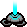 | Isaac emits a beam from his face. Isaac's tears travel in the path of the beam. | passive | 0 |
| Zodiac | Zodiac will give Isaac a random zodiac item effect that changes after every floor. | passive | 0 | |
| <3 | Increases available heart containers by 1 and restores all health. | passive | 0 | |
| ???'s Only Friend | Summons a big attack fly that can be controlled with the shooting direction-keys. | passive | 0 | |
| 1up! | Gives an extra life. Upon death, you will respawn in the previous room with full health and lose the 1up!. | passive | 0 | |
| 20/20 | Grants a double shot. | passive | 0 | |
| 3 Dollar Bill | Gives Isaac a random tear effect every room. Effect given changes upon entering a room. | passive | 0 | |
| 9 Volt | Reduces the charge of any Activated Items by 1. Any 1 charge items instead have timed recharges. | passive | 0 | |
| Abaddon | Increases damage and speed, removes all red heart containers, grants six black hearts, and adds a chance to shoot fear tears. | passive | 0 | |
| Abel | A familiar that mirrors the player's movements and shoots in the opposite direction. | passive | 0 | |
| Anemic | +5 Range. After Isaac is damaged, a trail of red creep will be left behind Isaac until he leaves the current room. | passive | 0 | |
| Ankh | Upon death, the player will respawn as Blue Baby with 3 Soul Hearts. | passive | 0 | |
| Anti-Gravity | Tears up. Tears float in position until firing ceases, after which they will fly off in the direction they were shot in. | passive | 0 | |
| Aquarius | A trail of blue creep is left behind Isaac, which damages enemies. | passive | 0 | |
| Aries | +0.25 Speed. Running into enemies while at a high speed will deal 18 points of damage. Does not prevent contact damage. | passive | 0 | |
| Ball Of Bandages | Orbiting familiar that deals damage to enemies. If collected while already having one, makes the familiar evolve. Only drops from Horsemen. Similar to Cube of Meat. | passive | 0 | |
| Ball Of Tar | Adds a chance to shoot slowing tears and the character leaves a trail of slowing creep behind as he moves, impeding enemies' speed. | passive | 0 | |
| The Battery | Activated Items can be "overcharged" to allow for an additional use. | passive | 0 | |
| The Belt | Increases speed by 0.3 | passive | 0 | |
| Best Bud | When hit, summons a white attack fly similar to Distant Admiration for the current room. | passive | 0 | |
| BFFS! | Increases the size and damage of familiars. | passive | 0 | |
| BBF | Spawns a familiar that flies around the room in a manner similar to the Boom Fly and explodes on contact with an enemy. Respawns after ten seconds. | passive | 0 | |
| Big Fan | Spawns a large orbital familiar that blocks enemy projectiles and deals slight contact damage to enemies. | passive | 0 | |
| The Black Bean | When taking damage, Isaac farts, causing poison damage to all enemies in range. | passive | 0 | |
| Black Candle | Prevents Curses. Grants one black heart. If obtained on a floor with a Curse, it will remove the Curse. | passive | 0 | |
| Black Lotus | Grants the player one red heart container, one soul heart, and one black heart. | passive | 0 | |
| Blood Bag | Grants 1 heart container, restores 5 red hearts, and increases speed. | passive | 0 | |
| Blood Clot | Increases damage by 1 and range by 5 for tears fired from the left eye. | passive | 0 | |
| Blood Of The Martyr | Increases Damage by 1, and turns Isaac's tears into blood tears. | passive | 0 | |
| Bloody Lust | Increases damage as Isaac receives damage. Damage increase stays for the whole floor. | passive | 0 | |
| Blue Cap | Grants 1 heart container and increases tears, but decreases shot speed. | passive | 0 | |
| Blue Map | Shows secret and super secret room locations on the map. | passive | 0 | |
| Bob's Brain | Spawns a familiar that charges forward when shooting tears, explodes upon contact with an enemy and poisons them. Respawns after few seconds. | passive | 0 | |
| Bob's Curse | Gives 5 bombs and grants all bombs poison effect. | passive | 0 | |
| Bobby-Bomb | Gives Isaac 5 Bombs, and causes all dropped bombs to home towards the closest enemy. | passive | 0 | |
| The Body | Adds 3 Heart Containers. | passive | 0 | |
| Bogo Bombs | All standard bomb pickups become 1+1 Free bombs. | passive | 0 | |
| Bomb Bag | Isaac is followed by a small bag that drops a Bomb, 1+1 Free, or a Troll Bomb every 3 rooms. | passive | 0 | |
| Boom! | Gives 10 bombs. | passive | 0 | |
| Box | Spawns 1 of each (non-collectible) item: 1 coin, 1 key, 1 bomb, 1 heart, 1 card, 1 pill, 1 trinket. | passive | 0 | |
| Breakfast | Adds 1 Heart Container. | passive | 0 | |
| Brimstone | Tears are replaced by a laser beam that pierces through all enemies and obstacles in its path and deals high damage. Can only be fired after a short charge-up period. | passive | 0 | |
| Broken Watch | Chance upon entering a room to slow down or speed up every enemy and their attacks. The chance to slow enemies is quite higher than the chance to speed them up. | passive | 0 | |
| Brother Bobby | Follows Isaac around shooting normal tears. | passive | 0 | |
| Bucket Of Lard | Grants two empty heart containers and heals Isaac by half a heart, but decreases speed by 1. | passive | 0 | |
| Bum Friend | A portable Beggar who follows Isaac, picks up coins for himself, and occasionally drops a Pickup after collecting a coin. Does not spawn Collectibles. | passive | 0 | |
| Butt Bombs | Gives +5 Bombs and makes all bombs Butt Bombs that fill the room with gas, damaging and Confusing all enemies. | passive | 0 | |
| Caffeine Pill | Increases speed and reduces character size. Also gives a random pill. | passive | 0 | |
| Cain's Other Eye | Spawns a familiar that floats slowly around the room on a zig-zag pattern similar to The Peeper and shoots normal tears in the same direction as Isaac. | passive | 0 | |
| Cancer | Adds 3 soul hearts. Grants The Wafer effect for the current room upon taking damage. | passive | 0 | |
| Capricorn | All stats up. | passive | 0 | |
| Cat-O-Nine-Tails | Increases Shot Speed and damage. | passive | 0 | |
| Celtic Cross | Grants a chance to trigger the Book Of Shadows effect upon taking damage, creating a shield that nullifies all types of damage for 7 seconds. | passive | 0 | |
| Ceremonial Robes | Adds 3 Black Hearts and increases Damage by 1. | passive | 0 | |
| Champion Belt | Increases damage, but also increases the chance of Champion enemies appearing. | passive | 0 | |
| Charm Of The Vampire | Heals the character for half of a red heart for every 13 monsters killed. | passive | 0 | |
| Chemical Peel | Tears fired from left eye do increased damage. | passive | 0 | |
| Chocolate Milk | Grants charged tears that deal greater damage when fully charged. | passive | 0 | |
| The Common Cold | Adds a chance to shoot poison tears, dealing damage over time when inflicted. | passive | 0 | |
| The Compass | Reveals all special rooms (except secret rooms of any kind). | passive | 0 | |
| Contract From Below | Doubles the number of item pickups and chests spawned after clearing a room or performing some other triggering action (such as using a Blood Donation Machine). | passive | 0 | |
| Cricket's Body | Increases Tears by 0.16 and reduces Range by 10. When tears hit an object or deplete their range, they spawn 4 smaller tears. Distance traveled and size/damage of the child tears is determined by Range and Damage of Isaac, respectively. | passive | 0 | |
| Cricket's Head | Increases damage by 0.5, and multiplies it by 1.5x. | passive | 0 | |
| Cube Of Meat | Orbiting familiar that blocks enemy shots and deals damage to enemies. If collected while already having one, makes the familiar evolve. Only drops from Horsemen. Similar to Ball of Bandages. | passive | 0 | |
| Cupid's Arrow | Grants Isaac piercing tears that travel through enemies (but not obstacles) instead of breaking on impact with them. | passive | 0 | |
| Cursed Eye | Grants charged tears that can be fired in a tight burst of four. Getting hit while charging will teleport Isaac into another room. | passive | 0 | |
| Daddy Longlegs | Daddy Long Legs' shadow follows Isaac and stomps on enemies. | passive | 0 | |
| Dark Bum | Spawns a familiar that follows Isaac around and collects red hearts. For every one-and-a-half red hearts collected, Dark Bum will generate one soul heart, one hostile Spider or one friendly Blue Spider. | passive | 0 | |
| Dark Matter | Increases Damage by 1 and adds a chance to shoot fear tears. | passive | 0 | |
| Dead Bird | Spawns a flying familiar for the current room that chases enemies whenever Isaac takes damage. | passive | 0 | |
| Dead Cat | Sets the amount of red heart containers to 1, but gives Isaac 9 extra lives. After dying, Isaac is teleported to the last safe room. New heart containers can be obtained after picking up this item, but after each death, the number of heart containers is set to 1 again. | passive | 0 | |
| Dead Dove | Grants spectral tears and flight. | passive | 0 | |
| Dead Onion | Grants piercing and spectral tears. Increases tear size (without increasing damage) while greatly reducing range and shot speed. | passive | 0 | |
| Death's Touch | Increases Damage by 1.5, reduces Tears by 0.3 and increases tear size. Grants piercing tears. Tears are replaced by Death's scythes, which is a cosmetic effect only. | passive | 0 | |
| Demon Baby | Follows Isaac and automatically fires at enemies in its reach. | passive | 0 | |
| Dessert | Adds 1 Heart Container. | passive | 0 | |
| Dinner | Adds 1 Heart Container. | passive | 0 | |
| Distant Admiration | A red attack fly circles further out than the Halo Of Flies/Pretty Flies, but closer than Forever Alone. Deals more damage than Forever Alone. | passive | 0 | |
| A Dollar | Gives Isaac 99 coins. Can be found multiple times in a single playthrough. | passive | 0 | |
| Dr. Fetus | Tears are replaced by bombs that benefit from bomb-enhancing effects and slide a fixed range after being fired. | passive | 0 | |
| Dry Baby | Spawns a familiar that follows Isaac around and blocks enemy projectiles. Upon blocking a shot it has a chance of triggering The Necronomicon effect. | passive | 0 | |
| E Coli | Gives "Turdy Touch" Effect. Enemies that touch Isaac are changed into Poop. | passive | 0 | |
| Epic Fetus | Isaac's tears are replaced with guided missiles, like those used by the Doctor's Remote. | passive | 0 | |
| Eve's Mascara | Doubles damage, halves tears stat, and greatly reduces shot speed. | passive | 0 | |
| Experimental Treatment | Randomly increases and decreases some of the character's stats. There will always be at least one stat increase and one decrease and the same stats can be increased/decreased multiple times. | passive | 0 | |
| Fanny Pack | Has a chance to drop a random pickup when Isaac takes damage. | passive | 0 | |
| Fate | Grants flight and one Eternal Heart. | passive | 0 | |
| Fire Mind | Grants flaming tears that deal burning damage over time. Tears have a chance to explode on impact with an enemy, which creates a fire at the location of the explosion. | passive | 0 | |
| Forever Alone | Spawns a blue attack fly that orbits a long distance from Isaac. | passive | 0 | |
| Gemini | Suture becomes attached to Isaac, and does touch damage to enemies within its attacking range. | passive | 0 | |
| Ghost Baby | Spawns a familiar that follows Isaac around and fires spectral tears. | passive | 0 | |
| Gimpy | Has a chance of spawning a soul heart or black heart when taking damage. Enemies have a chance to drop a Half Red Heart after being killed. | passive | 0 | |
| Gnawed Leaf | After standing still and not shooting for a short time, Isaac turns invincible until he moves or shoots. | passive | 0 | |
| Goat Head | A Devil Room /Angel Room Door will always spawn after every boss fight, excluding the first floor and floors after Utero II/Womb II. | passive | 0 | |
| Godhead | Increases damage and range while reducing tears and shot speed. Grants homing tears and tears gain a damaging halo. | passive | 0 | |
| Growth Hormones | Increases damage by 1 and speed by 0.4. | passive | 0 | |
| Guardian Angel | Spawns an orbital familiar that blocks enemy projectiles, deals contact damage to enemies and increases the speed of all orbital familiars. | passive | 0 | |
| Guillotine | Isaac's head is removed from his body and floats around him. Increases Damage by 1 and Tears by 0.16. | passive | 0 | |
| Guppy's Collar | 50% chance to respawn with 1/2 heart after death. | passive | 0 | |
| Guppy's Hair Ball | Loosely follows behind Isaac. Can be swung like a flail by rapidly spinning Isaac in a circle. Grows bigger by killing enemies. | passive | 0 | |
| Guppy's Tail | Increases chance of gold chests and normal chests. | passive | 0 | |
| Habit | When Isaac is hit, 1 point of an item's charge is filled. | passive | 0 | |
| The Halo | Grants one Heart Container,+0.3 Damage, +0.2 Tears, +0.25 Range, +0.3 Speed and +0.5 Tear Height | passive | 0 | |
| Halo Of Flies | Spawns two pretty fly familiars that block enemy shots and deal contact damage to enemies. | passive | 0 | |
| Harlequin Baby | Spawns a familiar that follows Isaac around and fires two tears at once in a V-pattern. | passive | 0 | |
| Headless Baby | Familiar that follows Isaac, leaving blood creep on the ground. | passive | 0 | |
| Hive Mind | Increases the size of Blue Spiders and Blue Flies and doubles the amount of damage they deal. | passive | 0 | |
| Holy Grail | Grants flight and one heart container. | passive | 0 | |
| Holy Mantle | Automatically negates first taken damage in every room. | passive | 0 | |
| Holy Water | When Isaac receives damage, the bottle breaks and a puddle of blue Creep forms, which damages non-flying enemies, similar to Lemon Mishap. The bottle is reformed upon entering a different room. | passive | 0 | |
| Hot Bombs | Grants 5 bombs. Isaac's bombs leave behind fire that damages enemies upon contact. | passive | 0 | |
| Humbling Bundle | Gives one extra pickup (1+1 Free version) of Red Hearts, pennies, bombs and Keys. Does not work with blue, black and half red hearts, nickels and dimes. | passive | 0 | |
| Infamy | A brown/grey mask. Damage reduction. Can block projectiles on the side Isaac is facing. | passive | 0 | |
| Infestation | 1-3 Blue Flies randomly spawn every time Isaac gets hit. | passive | 0 | |
| Infestation 2 | Grants an infestation shot that spawns allied blue spiders from killed enemies. | passive | 0 | |
| The Inner Eye | Grants a triple shot but greatly decreases tears. | passive | 0 | |
| Ipecac | Replaces tears with explosive and poisoning projectiles fired in an arc from the mouth. | passive | 0 | |
| Iron Bar | Increases damage by 0.3 and adds a chance to shoot concussive tears, causing enemies to walk around randomly. | passive | 0 | |
| Isaac's Heart | Isaac himself is now immune to all damage, and a heart familiar appears and follows Isaac. If the heart is hurt, Isaac is hurt. | passive | 0 | |
| Jesus Juice | Increases Damage and Range. | passive | 0 | |
| Judas' Shadow | Adds an extra life; upon death, it respawns Isaac as Black Judas with only two black hearts. | passive | 0 | |
| Juicy Sack | A Familiar that follows behind Isaac. It drips a trail of creep, which slows enemies, and spawns 1-2 Blue Spiders after each room. | passive | 0 | |
| Key Piece 1 | Combined with Key Piece 2, unlocks the golden gate in the starting room of The Chest and Dark Room to fight Mega Satan. | passive | 0 | |
| Key Piece 2 | Combined with Key Piece 1, unlocks the golden gate in the starting room of The Chest and Dark Room to fight Mega Satan. | passive | 0 | |
| The Ladder | Allows Isaac to walk across gaps one square across by automatically placing a ladder between the two walkable sections. | passive | 0 | |
| Latch Key | Increases Luck by 1, grants 1 Soul Heart and spawns 2 Keys. | passive | 0 | |
| Lazarus' Rags | Upon dying, resurrect with one heart container and Anemic item. | passive | 0 | |
| Leech | Spawns a friendly familiar leech on the ground that hunts down enemies and heals you for half a heart each time it eats one. | passive | 0 | |
| Leo | Allows you to crush rocks when you walk over them. | passive | 0 | |
| Libra | Gives 6 coins, 6 bombs and 6 keys and balances out all attributes. | passive | 0 | |
| Lil' Brimstone | A Familiar that shoots a small Brimstone beam. Must charge like the Brimstone Item before shooting. | passive | 0 | |
| Lil' Haunt | A familiar that damages enemies by chasing them as well as inducing the fear effect. | passive | 0 | |
| Little Baggy | Gives Isaac a random Pill and add a slot pill | passive | 0 | |
| Little C.H.A.D. | A Familiar who will drop a half Heart every 2 rooms. | passive | 0 | |
| Little Chubby | A Familiar that charges forward and deals touch damage to any enemies in her path. Will attack when the Isaac attacks with a moderate cooldown time before she can attack again. | passive | 0 | |
| Little Gish | Spawns a familiar that follows Isaac around and fires slowing tears, impeding enemies' speed. | passive | 0 | |
| Little Steven | Spawns a familiar that follows Isaac around and fires homing tears. | passive | 0 | |
| Loki's Horns | Gives a random chance for projectiles to fire in all 4 cardinal directions. | passive | 0 | |
| Lord Of The Pit | Grants flight and increases speed. | passive | 0 | |
| Lost Contact | Every tear has a small shield which will allow it to block one enemy projectile. | passive | 0 | |
| Lucky Foot | +1 Luck. Increases chance of winning Shell Game Beggar. (Independent of luck stat) | passive | 0 | |
| The Ludovico Technique | Instead of firing tears, Isaac controls one floating tear that hover over obstacles. This tear deals constant damage when held in place over an enemy. | passive | 0 | |
| A Lump Of Coal | The more distance tears travel, the more damage they will do. | passive | 0 | |
| Lunch | Adds 1 Heart Container. | passive | 0 | |
| Maggy's Bow | Gives one heart container and doubles the healing provided by red hearts. | passive | 0 | |
| Magic 8 Ball | Increases Shot Speed, and drops a Tarot Card when picked up. | passive | 0 | |
| Magic Mushroom | Increases all stats and enlargens Isaac | passive | 0 | |
| Magic Scab | Increases luck and HP by 1. | passive | 0 | |
| Magneto | Pulls Pick Ups towards Isaac. | passive | 0 | |
| The Mark | Increases Damage and Speed, plus adds one Soul Heart. | passive | 0 | |
| Match Book | Grants Isaac 1 Black Heart and 3 bombs. Can also give troll bombs. | passive | 0 | |
| MEAT! | Adds a heart container, and increases damage. | passive | 0 | |
| Midas' Touch | Enemies that touch you are stunned and turn gold. Any enemy killed while in this state will drop a coin. | passive | 0 | |
| The Mind | Grants the combined effects of the Blue Map, Treasure Map and The Compass, revealing the floor layout and all special rooms, including Secret Rooms and Super Secret Rooms. | passive | 0 | |
| Mini Mush | Increases Speed and Range. | passive | 0 | |
| Missing Page 2 | Gives 1 black heart. Upon taking damage that reduces Isaac's health to one heart or less, activates The Necronomicon effect, dealing 40 damage to all enemies in the room. | passive | 0 | |
| Missing No. | Randomizes all passive items upon pickup and at the start of each succeeding floor. | passive | 0 | |
| Mitre | Grants a chance of converting any red hearts pickups into soul hearts instead. | passive | 0 | |
| Mom's Coin Purse | Spawns 4 random Pills around Isaac. | passive | 0 | |
| Mom's Contacts | Adds a chance to shoot petrifying tears, which stop enemies in place and prevent them from moving or attacking. Range up. | passive | 0 | |
| Mom's Eye | Allows Isaac to fire tears from the back of his head. | passive | 0 | |
| Mom's Eyeshadow | Tears have a chance to charm enemies. | passive | 0 | |
| Mom's Heels | Increases range. | passive | 0 | |
| Mom's Key | Spawns 2 keys. Generates additional pickups from chests. | passive | 0 | |
| Mom's Knife | Isaac's tears are replaced by a knife that pierces enemies, can travel through obstacles, and can hurt enemies while Isaac is holding it. Holding down the fire button before firing increases its range and power. | passive | 0 | |
| Mom's Lipstick | Increases range. | passive | 0 | |
| Mom's Perfume | Adds a chance to shoot fear tears and increases Tears by 0.16. | passive | 0 | |
| Mom's Purse | Allows Isaac to hold 1 additional trinket. | passive | 0 | |
| Mom's Underwear | Increases range. | passive | 0 | |
| Mom's Wig | Adds a chance to spawn Blue Spiders when firing tears. Restores 1 red heart. | passive | 0 | |
| Money = Power | Increases damage by 0.04 for every coin Isaac has up to +3.96 damage at 99 coins. | passive | 0 | |
| Mongo Baby | Summons a familiar that copies the tears of Isaac's other familiars. | passive | 0 | |
| Monstro's Lung | Increases damage and grants a charged shot that fires multiple tears in the same fashion as Monstro. | passive | 0 | |
| Mr. Mega | Gives Isaac 5 bombs, and makes all dropped bombs larger, which have an increased blast radius and increased damage. | passive | 0 | |
| The Mulligan | Grants an infestation shot with a 1/6 chance of spawning allied blue flies when tears hit an enemy. | passive | 0 | |
| Mutant Spider | Grants a quadruple shot but decreases tears. | passive | 0 | |
| My Reflection | Gives Isaac's tears a boomerang effect, and sets range to default. | passive | 0 | |
| Mysterious Liquid | Tears leave a small, short lasting pool of creep on impact or when their range is depleted. | passive | 0 | |
| Mystery Sack | Spawns a familiar that follows Isaac around and has a chance to drop a heart, coin, bomb, or key after clearing a room. | passive | 0 | |
| Number One | Tears range is heavily decreased, but the fire rate is greatly increased. | passive | 0 | |
| Odd Mushroom (Large) | Grants an empty heart container. Increases damage, range and shot height while reducing speed. | passive | 0 | |
| Odd Mushroom (Thin) | Increases Tears and Speed while reducing Damage. | passive | 0 | |
| Old Bandage | Adds one empty heart container. Whenever Isaac takes damage there's a chance that a Red Heart may drop. | passive | 0 | |
| Ouija Board | Grants spectral tears that travel through obstacles (but not enemies) instead of breaking on impact with them. | passive | 0 | |
| The Pact | Increases damage by 0.5, tears by 0.7 and grants two soul hearts upon pickup. | passive | 0 | |
| Pageant Boy | Spawns several coins around Isaac. | passive | 0 | |
| The Parasite | Makes the Isaac's tears split in two when they hit something. | passive | 0 | |
| The Peeper | Spawns a familiar that floats slowly around the room on a zig-zag pattern similar to boom flies damaging enemies it passes through. | passive | 0 | |
| Pentagram | Increases Damage and increases chances of the Devil Room appearing. | passive | 0 | |
| PHD | Converts all bad pills into good pills, spawns one pill pickup and restores health. Identifies all pills upon pickup. | passive | 0 | |
| Pisces | Increases tears, adds knock-back shots and increases tear size. | passive | 0 | |
| Piggy Bank | Gives 3 pennies on pick-up. Every time Isaac is damaged, he will drop one additional penny. | passive | 0 | |
| Placenta | Regeneration, and increases HP by 1. | passive | 0 | |
| Polyphemus | Makes Isaac shoot one huge tear. Also reduces Tears to minimum. Damage increased . If tear does more damage than an enemy's life, the tear continues to travel with the extra remaining damage. | passive | 0 | |
| Proptosis | Tears start out massive with high damage, and then shrink down and become weaker over a short range. | passive | 0 | |
| Punching Bag | Spawns a Mulligan Familiar that will wander the room randomly. Enemies will attack the Mulligan if it's closer. | passive | 0 | |
| Pyro | Adds 99 bombs. | passive | 0 | |
| Pyromaniac | Isaac heals 1 heart instead of taking damage by a explosive blast from source. Adds 5 bombs. | passive | 0 | |
| A Quarter | Gives you 25 cents. | passive | 0 | |
| Rainbow Baby | Spawns a familiar that follows Isaac around and fires rainbow tears. | passive | 0 | |
| Raw Liver | Increases available Heart Containers by 2 and completely restores health. | passive | 0 | |
| The Relic | Isaac is followed by a small blue cross that will drop a Soul Heart every 5 rooms. | passive | 0 | |
| Robo-Baby | Follows Isaac around, shooting enemies with an eye laser similar to Technology. | passive | 0 | |
| Robo-Baby 2.0 | Fires lasers at any enemy in its line of sight and moves based onthe direction Isaac is firing tears | passive | 0 | |
| Roid Rage | Increases speed by 0.6, range by 5.25, and tear height by 0.5. | passive | 0 | |
| Rosary | Adds 3 Soul Hearts and increases the chance for The Bible to appear in the Shop. | passive | 0 | |
| Rotten Baby | A familiar that spawns Blue Flies. | passive | 0 | |
| Rotten Meat | Adds one heart container. | passive | 0 | |
| Rubber Cement | Tears bounce off walls and obstacles (including enemies). | passive | 0 | |
| Sack Of Pennies | Isaac is followed by a small bag that drops a coin every 2 rooms. | passive | 0 | |
| Sacred Heart | Increases damage and range while reducing shot speed and grants homing tears. Replenishes all Red Hearts and gives one Soul Heart upon pickup. | passive | 0 | |
| Sacrificial Dagger | Dagger orbits Isaac, dealing very high damage. | passive | 0 | |
| Sad Bombs | +5 Bombs. Upon exploding, bombs shoot 8 tears off in every direction, similar to Tammy's Head. The tears are affected by any tear modifiers Isaac has on his own tears. | passive | 0 | |
| The Sad Onion | Increases Tears by 0.7. | passive | 0 | |
| Safety Pin | Increases range and shot speed, while adding 1 Black Heart. | passive | 0 | |
| Sagittarius | Increases speed by +0.2 and grants piercing tears. | passive | 0 | |
| Samson's Chains | Pull a chain and ball behind you that will damage enemies on contact and is able to break stones. | passive | 0 | |
| Scapular | Once per room, when Isaac is reduced to his last half red Heart, the aura around his head temporarily vanishes and he is granted one Soul Heart. | passive | 0 | |
| Scorpio | Grants poison tears, which deal damage over time when inflicted. | passive | 0 | |
| Screw | Tears and shot speed up. | passive | 0 | |
| Sharp Plug | Using an activated item while it's not charged will charge it and Sharp Plug does 2 full heart damage to Isaac | passive | 0 | |
| Sissy Longlegs | Wanders about the room, occasionally spawning Blue Spiders. | passive | 0 | |
| Sister Maggy | A Familiar that follows Isaac around shooting blood tears. | passive | 0 | |
| Skatole | All types of fly except Boom Fly and Red Boom Fly become passive and slowly move towards Isaac. Does not prevent contact damage. | passive | 0 | |
| Skeleton Key | Sets your key count to the maximum of 99. | passive | 0 | |
| The Small Rock | Increases damage by 1, increases tears by 0.2, and decreases speed by 0.1. | passive | 0 | |
| Smart Fly | After Isaac takes damage, this fly will deal continuous touch damage to whatever enemy caused the damage until it is dead. The fly will then systematically attack 1 enemy at a time until the room is cleared. | passive | 0 | |
| SMB Super Fan! | Increases all stats. | passive | 0 | |
| A Snack | Adds 1 Heart Container. | passive | 0 | |
| Soy Milk | Tears shrink and do much less damage, but fire in very rapid succession. | passive | 0 | |
| The Soul | Grants two Soul Hearts. Isaac now repels enemy projectiles. | passive | 0 | |
| Speed Ball | Increases speed by 0.3 and shot speed by 20%. | passive | 0 | |
| Spelunker Hat | Reveals type of adjacent rooms, including location for secret rooms and super secret rooms. | passive | 0 | |
| Spider Bite | Adds a chance to shoot slowing tears, reducing speed of enemy movement and any projectile fired by them. | passive | 0 | |
| Spider Baby | When hit, spawns up to 2 Blue Spiders. | passive | 0 | |
| Spirit Of The Night | Grants spectral tears and flight. | passive | 0 | |
| Spoon Bender | Grants Isaac homing tears. | passive | 0 | |
| Squeezy | Increases tears by 0.4, and spawns 2 Soul Hearts pickups. | passive | 0 | |
| Starter Deck | Isaac can hold 2 cards at once and all pills are replaced by cards. | passive | 0 | |
| Steam Sale | Reduces all Shop prices by 50%, rounded down when an item, rounded up when a pickup. | passive | 0 | |
| Stem Cells | Adds one filled Heart Container and increases Shot Speed. | passive | 0 | |
| Steven | Increases Damage by 1. | passive | 0 | |
| Stigmata | Increases damages, and adds 1 heart container. | passive | 0 | |
| Stop Watch | Automatically inflicts slow to all enemies in every room. Upon taking damage, inflicts slow to all enemies for the current room. | passive | 0 | |
| Strange Attractor | Pick Ups, Chests and Monsters are magnetically attracted to your tears. | passive | 0 | |
| Super Bandage | Grants one Heart Container and gives 2 Soul Hearts. | passive | 0 | |
| Synthoil | 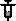 | Increases damage by 1, range by 5.25, and tear height by 0.5. | passive | 0 |
| Taurus | Speed down, gains speed while in a room with enemies until gaining My Little Unicorn effect for a few seconds. | passive | 0 | |
| Tech.5 | Grants a unlimited range piercing laser with random rate of fire that does not replace tears. The laser might occasionally fire with the effect of a random item or trinket, such as Hook Worm, Spoon Bender or Tiny Planet. | passive | 0 | |
| Technology | Replaces tears with a piercing laser with unlimited range. | passive | 0 | |
| Technology 2 | Decreases damage and replaces right eye tears with a unlimited range, piercing laser which fires continuously. | passive | 0 | |
| Tiny Planet | Range up and makes shot tears revolve around Isaac until they drop. | passive | 0 | |
| The Negative | If the character has half a red heart or no red hearts after taking damage, it triggers The Necronomicon effect, damaging all enemies in the room. Also allows entrance into the Dark Room. | passive | 0 | |
| The Polaroid | If the character has half a red heart or no red hearts after taking damage, it triggers the Book Of Shadows effect, creating a shield that nullifies all types of damage for 5 seconds. Also allows entrance into The Chest. | passive | 0 | |
| There's Options | There will be 2 items available to chose from after defeating a boss. Choosing 1 item causes the other to disappear. Shop item. | passive | 0 | |
| Thunder Thighs | Destroys rocks upon contact with Isaac. Adds one heart, and Lowers Speed. | passive | 0 | |
| Toothpicks | Increases tears and shot speed. | passive | 0 | |
| Torn Photo | Tears + Shot speed up. | passive | 0 | |
| Tough Love | Adds a chance to shoot a tooth instead of a tear, which deals greater damage than regular tears. | passive | 0 | |
| Transcendence | Grants flight. | passive | 0 | |
| Treasure Map | Reveals all rooms for every floor. However, it does not reveal icons or secret rooms. | passive | 0 | |
| Trinity Shield | Isaac gains a shield that protects him from enemy shots. | passive | 0 | |
| The Wafer | All sources of damage that would cause one heart loss are reduced to half heart instead. | passive | 0 | |
| Whore Of Babylon | Increases damage and speed whenever the character health is half red heart or less (one red heart for Eve). | passive | 0 | |
| Wire Coat Hanger | Increases Tears by 0.7. | passive | 0 | |
| Wooden Spoon | Increases speed by 0.3. | passive | 0 | |
| Virgo | Grants a chance to trigger the Book Of Shadows effect upon taking damage, creating a shield that nullifies all types of damage for 10 seconds. Also converts "bad pills" into "good pills". | passive | 0 | |
| The Virus | Inflicts poison to enemies who make contact with Isaac. Speed down. | passive | 0 | |
| X-Ray Vision | Reveals and opens all Secret Room and Super Secret Room entrances. | passive | 0 | |
| 120 Volt | Whenever an enemy is shot, it will zap other enemies near them, dealing damage. | passive | 0 | |
| 2Spooky | Enemies near Isaac will be inflicted with Fear, causing them to flee from him. | passive | 0 | |
| A Bar Of Soap | Increases tears and shot speed. | passive | 0 | |
| Act Of Contrition | Grants an Immortal Heart and increases tears. | passive | 0 | |
| Akeldama | Whenever Isaac fires a shot, a bloody tear will spawn behind him. Multiple tears will form a trail of tears that drags behind Isaac as he moves, bursting and dealing damage upon contact with enemies. Multiple trails can be formed. | passive | 0 | |
| Almond Milk | Upgrades fire rate immensely but significantly decreases damage, and tears are given random worm effects. | passive | 0 | |
| Battery Pack | Recharges Isaac's currently held active item and drops 2-4 batteries. | passive | 0 | |
| Bird Cage | 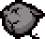 | Upon taking damage the first time in a room, the familiar leaps from Isaac's head, targets an enemy, and lands on them, dealing damage and releasing a rock wave. For the rest of the room, the familiar targets and attacks enemies similar to Dead Bird. | passive | 0 |
| Bird's Eye | Adds a chance to spit a large fire whenever Isaac fires a tear. | passive | 0 | |
| Birthright | Grants different effects depending on which character you're playing as. | passive | 0 | |
| Blood Bombs | Grants 5 bombs. Bombs create puddles of damaging red creep upon exploding. If Isaac has no bombs, bomb can be placed at the cost of half a heart. | passive | 0 | |
| Blood Oath | Stabs Isaac at the beginning of each floor, draining all but half a heart of his heart containers. Increases damage and speed. | passive | 0 | |
| Boiled Baby | Grants a familiar similar to a Boil that periodically fires bursts of bullets. | passive | 0 | |
| Booster Pack | Spawns 3 tarot cards. | passive | 0 | |
| Bot Fly | Grants a familiar that fires shielded tears at incoming bullets. | passive | 0 | |
| Consolation Prize | Raises Isaac's current lowest stat. Can also drop a consumable for whichever Isaac has the least of. | passive | 0 | |
| Dirty Mind | 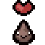 | Destroying poop spawns friendly Dips that follow the player and damage enemies. Destroying different types of poop spawns different Dips with special effects. | passive | 0 |
| Donkey Jawbone | Whenever Isaac takes damage, a spin attack will damage enemies around him. | passive | 0 | |
| Enigma Bombs | Grants 5 bombs. Bombs explode with a random bomb effect. | passive | 0 | |
| Evil Charm | Grants +3 luck. | passive | 0 | |
| Eye Drops | Increases tears. Tears fire at different rates from each of Isaac's eyes. | passive | 0 | |
| Eye Of The Occult | Increases damage. Tears can be controlled mid-flight using the fire keys. | passive | 0 | |
| Eye Sore | Frequently fire tears in random directions in addition to regular tears. Can fire up to three extra tears. | passive | 0 | |
| Freezer Baby | Grants a familiar that fires shots that freeze enemies. Frozen enemies explode into ice shards when touched. | passive | 0 | |
| Immaculate Heart | Fire orbiting tears along with normal tears. | passive | 0 | |
| The Intruder | Isaac will now fire four slowing tears in addition to normal tears. Upon taking damage multiple times in one room, Isaac's head will pop, spawning friendly spiders and a familiar that leaps at enemies. | passive | 0 | |
| It Hurts | Taking damage causes Isaac to release a ring of bloody tears and increases fire rate for current room. | passive | 0 | |
| Jacob's Ladder | Generates a ladder in the starting room next floors, which leads to an Angel Room. | passive | 0 | |
| Knife Piece 1 | Has no effect on its own. Picking up all three pieces grants a knife familiar that damages enemies and grants access to the Corpse. | passive | 0 | |
| Knife Piece 2 | Has no effect on its own. Picking up all three pieces grants a knife familiar that damages enemies and grants access to the Corpse. | passive | 0 | |
| Knife Piece 3 | Has no effect on its own. Picking up all three pieces grants a knife familiar that damages enemies and grants access to the Corpse. | passive | 0 | |
| Knockout Drops | Adds a chance to fire fist tears, which have massive knockback and briefly stun enemies. | passive | 0 | |
| Lil' Dumpy | Grants a familiar that loosely follows the player. Farts when hit by enemy attacks. | passive | 0 | |
| Lodestone | Adds a chance to fire magnetizing tears. Magnetized enemies attract other enemies, Isaac's tears, and enemy shots including their own. | passive | 0 | |
| Lost Soul | Spawns a familiar version of The Lost that follows Isaac. Upon being hit, it instantly dies, regenerating on the next floor. If it survives an entire floor, it grants a random reward. | passive | 0 | |
| Luna | Adds one extra Secret Room and one Super Secret Room on each floor. | passive | 0 | |
| Mars | Gain the ability to charge by double-tapping in a direction. Isaac is invincible during the charge and deals significant damage. Can be used multiple times per room with a short recharge time. | passive | 0 | |
| Member Card | Opens a trapdoor with a ladder in every shop. The trapdoor leads to a special shop room, which sells multiple items or pickups for random prices. Sold collectibles don't have to be from the Shop pool. | passive | 0 | |
| Menorah | Spawns a menorah familiar that grants an extra tear per shot for each candle lit. The menorah starts with one candle lit, and each time Isaac is hit, another candle is lit, up to a maximum of 7 tears per shot. Being hit an additional time will release blue flames that damage enemies and reset the menorah. | passive | 0 | |
| Mercurius | Doors stay open after entering a room, even with enemies in it, allowing Isaac to leave any time. Increases speed. | passive | 0 | |
| Monstrance | Isaac emits an aura that damages nearby enemies. | passive | 0 | |
| Mucormycosis | Upon enemies' death, they release a cloud of gas that damages and poisons other enemies. | passive | 0 | |
| Oculus Rift | Adds a chance to fire tears that summon rifts wherever they land. Rifts attract enemies, enemy shots, Isaac's tears, and pickups. They also deal contact damage to enemies caught in them. | passive | 0 | |
| Orphan Socks | Isaac gains 2 spirit hearts and can walk on harmful floor effects. | passive | 0 | |
| Paschal Candle | Increases stats for each room completed without taking damage. Resets on taking damage. | passive | 0 | |
| Playdoh Cookie | Adds random effects to tears. | passive | 0 | |
| Pluto | 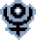 | Decreases Isaac's size to the point where many tears will fly over Isaac. Increases tears and speed, and decreases range. | passive | 0 |
| Psy Fly | Catches enemy shots and flings them back at enemies as homing tears. | passive | 0 | |
| Red Stew | Restores all red heart containers. Grants an enormous damage boost that wears off over time. | passive | 0 | |
| Revelation | Adds 2 Immortal Hearts, grants flight, gives tears a Brain Worm-like homing effect, decreases range and increases shot speed. | passive | 0 | |
| Rock Bottom | 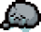 | All stats down. Prevents stats from being lowered the rest of the run. | passive | 0 |
| Rocket In A Jar | Grants 5 bombs. Bombs become rockets that fly in the direction Isaac is currently looking. | passive | 0 | |
| Rotten Tomato | Tears have a chance to mark enemies. Marked enemies will be attacked by other enemies. | passive | 0 | |
| Saturnus | Isaac is surrounded by an aura which grants 7 orbiting tears when entering a new room and has a chance to absorb incoming enemy tears. | passive | 0 | |
| Sausage | All stats up. | passive | 0 | |
| Schoolbag | 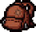 | Grants an extra active item slot. | passive | 0 |
| Sol | Activates the Sun tarot card and fully recharges Isaac's active item upon defeating a boss. Reveals the location of the Boss room on the map. | passive | 0 | |
| Spirit Sword | 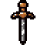 | Replaces Isaac's tears with a sword he can swing in front of him. Holding an attack button charges a spin attack. If Isaac is at full health, it also shoots a projectile when swung. Only one projectile can be active at once. | passive | 0 |
| Stone Bombs | Grants 5 bombs. Bombs release rock waves in the cardinal directions, which can damage enemies, destroy obstacles, and damage Isaac. | passive | 0 | |
| Terra | Isaac's tears become rocks. The tears can also destroy rocks. | passive | 0 | |
| Tinytoma | A large orbital that slowly orbits Isaac. Upon taking enough tear or contact damage, the orbital splits into two smaller ones that orbit opposite of each other. If the small orbitals take enough damage, they burst into a few blue spiders, and the large orbital respawns. | passive | 0 | |
| Uranus | Isaac shoots ice tears. | passive | 0 | |
| Venus | Enemies near Isaac will be inflicted with Charm that wears off quickly after enemies move away from Isaac, causing enemies to attack each other. | passive | 0 | |
| Voodoo Head | 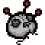 | Additional curse rooms can spawn each floor. | passive | 0 |
| Dark Prince's Crown | Increases range, tears, and shot speed when at exactly one red heart. | passive | 0 | |
| Apple! | Increases tears. Adds a chance to fire a high-damage razor blade. | passive | 0 | |
| Lead Pencil | After every 15 tears fired, Isaac will fire a high-damage cluster of tears. | passive | 0 | |
| Dog Tooth | Increases damage and speed. Upon entering a room adjacent to a secret room, a howl sound effect will play. | passive | 0 | |
| Dead Tooth | While firing, Isaac gains a green aura that poisons nearby enemies. | passive | 0 | |
| Linger Bean | 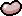 | Adds a chance to fire a gas cloud that damages nearby enemies. | passive | 0 |
| Shard Of Glass | Upon taking damage, Isaac has a chance to drop a pickup, gain 5 range, and leave a trail of damaging red creep for the current room. | passive | 0 | |
| Metal Plate | Adds a chance to reflect enemy shots. Grants one soul heart. | passive | 0 | |
| Eye Of Greed | Adds a chance to fire tears that temporarily stun enemies and turn them into gold. Any enemy killed while in this state will drop coins. | passive | 0 | |
| Tarot Cloth | Drops a random card or rune. Doubles the effects of cards and runes. | passive | 0 | |
| Varicose Veins | Taking damage releases a ring of 10 high damage tears. | passive | 0 | |
| Compound Fracture | Increases range. Tears turn into bones, which shatter into 1-3 bone shards upon hitting an enemy or obstacle. | passive | 0 | |
| Polydactyly | Allows Isaac to carry two cards, pills, or any combination of both at the same time. Drops a random card or pill. | passive | 0 | |
| Dad's Lost Coin | Increases range by 1.5. Drops a Lucky Penny. Other Effects Unknown | passive | 0 | |
| Moldy Bread | Grants a heart container. | passive | 0 | |
| Cone Head | Grants a soul heart. Adds a chance to block enemy shots. | passive | 0 | |
| Belly Button | Drops a random trinket. Grants an extra trinket slot. | passive | 0 | |
| Sinus Infection | Adds a chance to fire a booger which sticks to enemies and poisons them. | passive | 0 | |
| Glaucoma | Adds a chance to shoot concussive tears, causing enemies to walk around randomly. | passive | 0 | |
| Parasitoid | Adds a chance to fire an egg sack which spawns slowing creep and spawns a blue fly or spider upon hitting an enemy. | passive | 0 | |
| Eye Of Belial | Grants piercing tears. After piercing one enemy, tears start homing and deal double damage. | passive | 0 | |
| Sulfuric Acid | Increases damage. Adds a chance to fire acidic tears which can destroy obstacles. | passive | 0 | |
| Glyph Of Balance | Grants 2 soul hearts, Other Effects Unknown | passive | 0 | |
| Analog Stick | Decreases tear delay. Allows Isaac to fire tears diagonally. | passive | 0 | |
| Contagion | The first enemy killed in a room explodes and poisons nearby enemies. Poisoned enemies will also explode upon death. | passive | 0 | |
| Finger! | Spawns a finger familiar that points at enemies, dealing constant damage. | passive | 0 | |
| Shade | Spawns a shadow familiar that follows Isaac's movements on a 3 second delay and deals contact damage to enemies. | passive | 0 | |
| Depression | Spawns a cloud familiar that leaves a trail of tears that damages enemies. Has a chance to spawn damaging beams of light onto enemies that touch the cloud. | passive | 0 | |
| Hushy | Spawns a Hush familiar that bounces around the room and deals contact damage. While firing tears, it stops moving. | passive | 0 | |
| Lil Monstro | Spawns a familiar that fires clusters of tears. Must be charged before shooting. | passive | 0 | |
| King Baby | Spawns a familiar that follows Isaac and makes other familiars follow it. While firing tears, it stops moving. | passive | 0 | |
| Big Chubby | Spawns a familiar that slowly charges forward and damages enemies in its path. | passive | 0 | |
| Acid Baby | Spawns a familiar that drops random pills every 2 rooms cleared. Upon using a pill, all enemies in the room are poisoned. | passive | 0 | |
| YO LISTEN! | Increases luck. Spawns a fairy familiar that points out secret room entrances and tinted rocks. | passive | 0 | |
| Adderline | Increases damage based on how many empty heart containers Isaac has. | passive | 0 | |
| Jacob's Ladder | Tears fire sparks of electricity in random directions upon hitting an obstacle or enemy. | passive | 0 | |
| Ghost Pepper | Adds a chance to shoot a fire that damages enemies and remains in place until it deals enough damage or the room is left. | passive | 0 | |
| Euthanasia | Adds a chance to fire needles. If a needle kills an enemy, it bursts into more needles. | passive | 0 | |
| Camo Undies | Isaac becomes camouflaged at the beginning of each room. Enemies will not attack Isaac until he starts firing tears. | passive | 0 | |
| Duality | Whenever a Devil or Angel Room would spawn after defeating a boss, both rooms spawn. Only one can be entered. | passive | 0 | |
| Eucharist | An Angel Room door will always spawn after every boss fight, excluding the first floor and floors after Utero II/Womb II. | passive | 0 | |
| Sack Of Sacks | Spawns a sack familiar that has a chance to drop a sack upon clearing a room. | passive | 0 | |
| Greed's Gullet | Grants a heart container for every 25 coins Isaac has. | passive | 0 | |
| Large Zit | Adds a chance to fire a creep shot that deals double damage and leaves a trail of slowing white creep. | passive | 0 | |
| Little Horn | Adds a chance to fire a piercing tear that instantly kills any enemy that it touches. | passive | 0 | |
| Poke Go | Upon entering a room with enemies in it, has a chance to spawn a random charmed enemy that persists across rooms. | passive | 0 | |
| Backstabber | Has a chance to fire tears that inflict bleeding on enemies, causing them to slowly take damage over time. | passive | 0 | |
| Mom's Razor | Spawns an orbiting razor that damages enemies it touches and inflicts bleeding on enemies, causing them to slowly take damage over time. | passive | 0 | |
| Bloodshot Eye | Spawns an orbiting eye familiar that fires tears every 2 seconds. | passive | 0 | |
| 0 - The Fool | Teleports you back to the starting room of a floor. | card | 0 | |
| I - The Magician | Grants homing tears for the current room. | card | 0 | |
| II - The High Priestess | Mom's dismembered leg is called down to deal 300 damage to anything it stomps. It will always stomp on the enemy with the most health. If used in an empty room or during the fight with Mom, it will stomp Isaac instead. | card | 0 | |
| III - The Empress | Triggers the Whore Of Babylon effect. | card | 0 | |
| IV - The Emperor | Teleports you into the Boss Room of a floor. | card | 0 | |
| V - The Hierophant | Spawns 2 Soul Hearts. | card | 0 | |
| VI - The Lovers | Drops 2 full red hearts. If used in a Black Heart or Eternal Heart-containing Super Secret Room, it will spawn those types of hearts instead. | card | 0 | |
| VII - The Chariot | Grants the temporary invulnerability effect of My Little Unicorn. | card | 0 | |
| VIII - Justice | Spawns one of each consumable drop (a heart, a key, a bomb, and a coin). | card | 0 | |
| IX - The Hermit | Teleports you to the shop. If there is no shop, this will act as a random teleport. If the shop has not yet been accessed, this card will unlock the door without requiring a key (as long as the player exits through the main entrance). | card | 0 | |
| X - Wheel of Fortune | Spawns an arcade machine (Slot Machine or Fortune Teller). | card | 0 | |
| XI - Strength | Upon use, increases all of Isaac's stats except tears and adds one (temporary) heart container for the current room. | card | 0 | |
| XII - The Hanged Man | Removes Isaac's body, allowing him to fly around similar to Transcendence. | card | 0 | |
| XIII - Death | Deals 40 damage to all enemies in the room. | card | 0 | |
| XIV - Temperance | Spawns a Blood Donation Machine. | card | 0 | |
| XV - The Devil | Increases your damage by 2 until you leave the room (same effect as the Book of Belial). | card | 0 | |
| XVI - The Tower | Spawns 6 troll bombs randomly around the room. | card | 0 | |
| XVII - The Stars | Teleports the player to the Treasure Room. If there is no Treasure Room, this will act as a random teleport. Randomly chooses a Treasure Room on Curse of the Labyrinth. If the Treasure Room has not yet been accessed, this card will unlock the door without requiring a key (as long as the player exits through the main entrance). | card | 0 | |
| XVIII - The Moon | Teleports the player to the Secret Room. This card will open one random wall once inside the Secret Room, so you can leave even if you don't have any bombs available. | card | 0 | |
| XIX - The Sun | Restores full health, deals 100 damage to all enemies in the room, and reveals the map for the current floor, except the Super Secret Room. | card | 0 | |
| XX - Judgement | Spawns a Beggar. | card | 0 | |
| XXI - The World | Reveals the entire floor, except for the Super Secret Room. Has no effect if under the effect of Curse of the Lost or Amnesia. | card | 0 | |
| Emergency Contact | When used, will cause two Mom's Hands to come down and grab two random enemies. | card | 0 | |
| Dice Shard | Upon use, activates the effects of the D6 and the D20 at the same time. | card | 0 | |
| 2 of Clubs | Doubles your bombs. If you have no bombs, gives you 2 instead. | card | 0 | |
| 2 of Spades | Doubles your keys. If you have no keys, gives you 2 instead. | card | 0 | |
| 2 of Diamonds | Doubles your coins. If you have no coins, gives you 2 instead. | card | 0 | |
| 2 of Hearts | Doubles your current number of red hearts (Soul and Black hearts are unaffected). Doesn't add new heart containers, just fills empty ones. | card | 0 | |
| Joker | Teleports you to the Devil Room or Angel Room. | card | 0 | |
| Suicide King | Kills Isaac and spawns lots of pickups, items, and/or chests in the same room. | card | 0 | |
| Chaos Card | Throws the card to kill anything in its path. Opens normal doors. | card | 0 | |
| Credit Card | Converts all items in the Shop or Devil Room into pickups or items on pedestals, allowing them to be picked up for free. This card's effect lasts for the entire floor, but only affects the room it was used in. Wasted if used outside the shop or the devil room. Allows devil room items to be obtained without affecting the chance of an angel room appearing. | card | 0 | |
| Rules Card | Displays a cryptic statement on the screen, similar to a Fortune Teller. These messages (often) provide hints on bosses, bonus areas, etc. | card | 0 | |
| A Card Against Humanity | Covers the entire room with poop. The process is not instant, and the room will not get filled if you leave it before it's done filling. | card | 0 | |
| ? Card | When used, copies the effect of Isaac's currently held activated collectible item. | card | 0 | |
| Get Out Of Jail Free Card | Upon use, opens all doors in the current room (including the golden door at The Chest/Dark Room), similar to Dad's Key. | card | 0 | |
| Hagalaz | Destroys all breakable objects in the room. Does not affect Key Blocks. | rune | 0 | |
| Jera | Clones all pickups and chests in a room (even shop pickups; the clones can then be picked up for free). Cloned chests will contain exactly the same type of items: if the original contains a pickup, so will the clone; the same is true for Collectibles. Cannot clone other Jera runes and trinkets. | rune | 0 | |
| Ehwaz | Creates a trapdoor leading to the next floor. Has an estimated 1/12 (8%) chance to spawn a door to a Crawl Space instead. | rune | 0 | |
| Dagaz | Removes any curses from the current floor and grants a soul heart. (This will not remove Curse of the Labyrinth.) | rune | 0 | |
| Ansuz | Reveals the whole map, including the Secret Room and the Super Secret Room. | rune | 0 | |
| Perthro | Rerolls all pedestal items in the room. (This is the same effect as the D6.) | rune | 0 | |
| Berkano | Summons 3 friendly blue flies and 3 friendly blue spiders. | rune | 0 | |
| Algiz | Grants a shield which lasts for 30 seconds. | rune | 0 | |
| Blank Rune | Grants a random rune effect. Has a 25% chance to spawn another Blank Rune upon use. | rune | 0 |